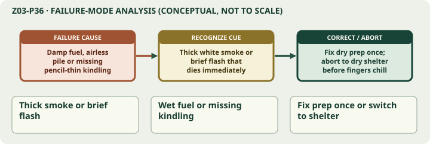

Z03-P36 · Fire and ignition · Adapted historical material
Diagnose smoky non-sustaining ignition attempts and damp fuel failures
Identify why an ignition attempt produces thick smoke or brief flashes without sustaining a flame, and decide when to stop.
When it applies · Authorized outdoor campfire lighting in damp, humid or windy weather.
Equipment · Dry prepared tinder, pencil-thin dry kindling and an explicit time/energy cutoff for switching to no-fire warmth.

Actions
- Match the failure cue to its cause: heavy white smoke with no flame signals damp tinder or blocked airflow; a bright brief flash that dies immediately signals missing fine dry transition kindling.[C03, ED]
- Pause and fix fuel preparation BEFORE striking more matches—split dry inner twigs, elevate the base off damp ground and open bottom airflow rather than feeding more wet sticks.[C03, C11, ED]
- Set a hard time and energy cutoff in cold weather; repeated failed fire attempts waste precious calories, chill bare fingers and delay shelter setup.[C08, E06, ED]
Failure recognition · Burning through an entire box of matches under wet leafy twigs while hands go numb and wind cools the whole group.[C03, C08, E06]
Verify · Confirm dry interior tinder, graduated pencil-thin kindling and clear airflow are corrected before attempting another strike.[C03, ED]
Stop or change course · If two disciplined attempts fail because fuel is soaked or wind is too strong, stop trying to build a fire and commit immediately to dry insulation and shelter.[C08, E05, C03]
Evidence and editorial notes
- C03 · USDA Forest Service / Smokey Bear · Smokey Bear’s Campfire Safety Guide (agency PDF)
- Section: Build your campfire > Tinder, kindling, fuel · Conditions: Outdoor authorized campfire
Support: Dry tinder, small kindling and larger fuel serve different roles. Gather materials before ignition. Avoid accelerants.
Limitations: Species availability and moisture content vary by season and local collection rules. · Conflicting evidence: None; separates material function from unverified species claims.
Editorial note: Used to stage three-tier fuel geometry without prescribing specific live trees. · Specialist reviewer: Fire prevention
Primary source · checked 2026-11-24 - C08 · NWS · What To Do If You're Caught in a Winter Storm (current web edition)
- Section: Outside > If there is no shelter nearby · Conditions: Stranded outdoors during a winter storm
Support: Seek shelter and block wind and wet exposure. Reduce heat loss from contact with snow or ground.
Limitations: Does not guarantee overnight survival without adequate insulation or rescue. · Conflicting evidence: None; reinforces no-fire exposure control priority.
Editorial note: Anchors no-fire fallback when ignition fails or is banned. · Specialist reviewer: Cold-weather shelter specialist
Primary source · checked 2026-11-24 - C11 · NPS · Ten Essentials (current web edition)
- Section: Fire and illumination · Conditions: Outdoor emergency kit
Support: Carry a dependable ignition option and protect it from moisture. Carry a separate light.
Limitations: Disposable butane lighters lose vapor pressure in freezing cold; matches fail when damp. · Conflicting evidence: None; supports redundant dry ignition kit planning.
Editorial note: Keeps lighting independent of fire-building. · Specialist reviewer: Field equipment and fire prevention
Primary source · checked 2026-11-24 - E05 · NWS · What To Do If You're Caught in a Winter Storm (current web edition)
- Section: Outside and find shelter · Conditions: Cold, wet or windy winter conditions
Support: Block wind, stay dry and keep off cold ground. Keep exposure reduction separate from making a fire.
Limitations: Improvised windbreaks do not provide rated thermal protection or snow-load capacity. · Conflicting evidence: None; aligns with CDC-H.
Editorial note: Separates wind, ground, and moisture heat-loss pathways. · Specialist reviewer: Cold-weather shelter specialist
Primary source · checked 2026-11-24 - E06 · CDC · Preventing Hypothermia (current web edition)
- Section: Recognizing and treating hypothermia · Conditions: Cold wet exposure; signs such as confusion, slurred speech, fumbling or drowsiness
Support: Suspected hypothermia warrants prompt help and protection from further cooling. It can occur above freezing if wet or chilled.
Limitations: Early mild shivering can mask rapidly worsening judgment impairment. · Conflicting evidence: None; aligns with ARC and WMS guidance.
Editorial note: Anchors exposure-to-medical escalation thresholds. · Specialist reviewer: Wilderness medicine
Primary source · checked 2026-11-24
Source lineage · B012 P20 and Smokey Bear campfire guide; adapted historical material · Classification · Adapted historical material.